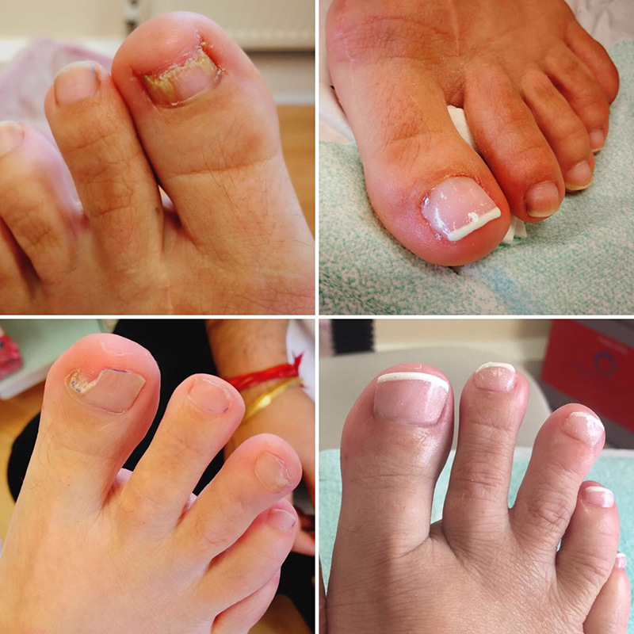
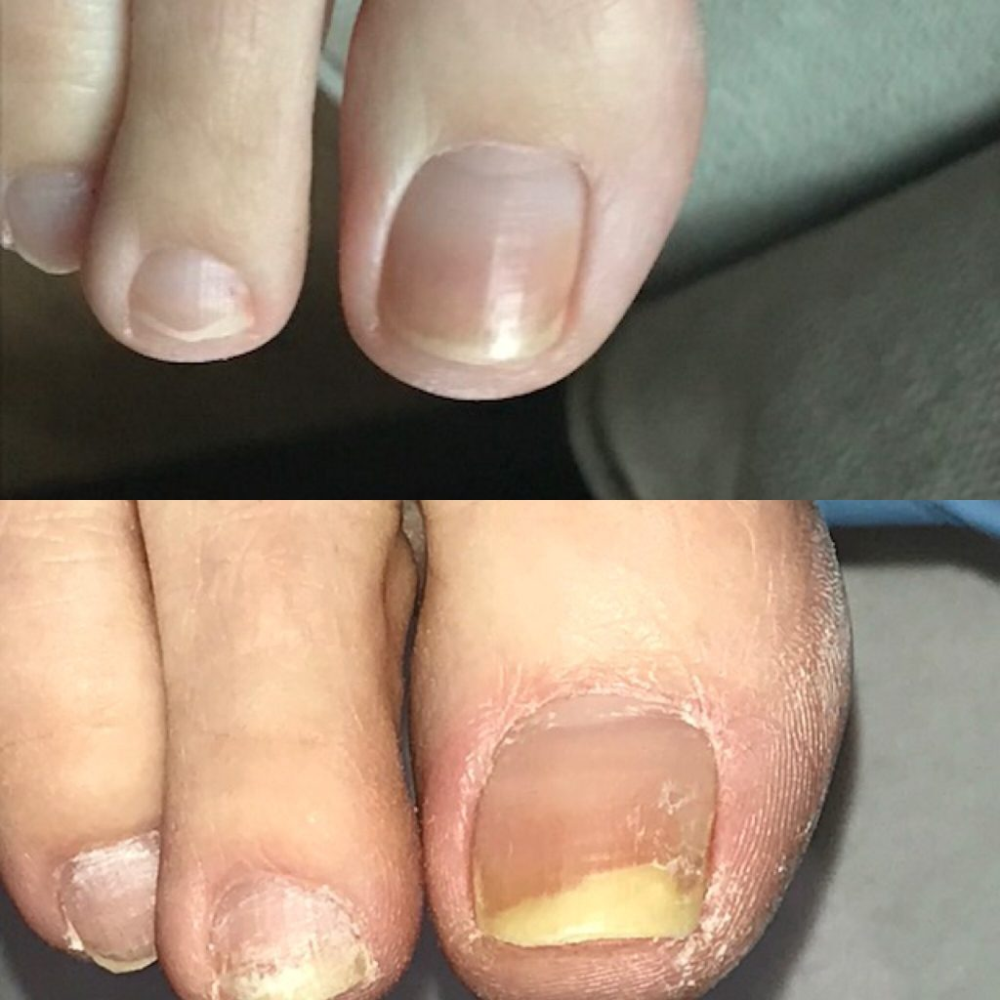

Ignored Symptoms & Failed Alternatives
Hello, my name is Peter and my story should caution everyone about the problem of toenail fungus.
It all began simply enough, a slight discomfort in my toenail that I brushed off as nothing serious. What I
didn’t know was that my neglect would lead to a horror sequence of pain and embarrassment.
Like many others, I got toenails fungus in a seemingly harmless environment. It all started after a visit to
the swimming pool at my local gym. The warm, damp surroundings were the perfect breeding ground for the
pesky fungi, and soon enough, I found myself dealing with more than just a cosmetic issue.
The massive mistake started when rather than addressing the problem head-on, I ignored the early
warning
signs such as nails that are -
- Thickened
- Discolored
- Brittle, crumbly, or ragged
- Misshapen
- Separated from the nail bed
- Painful
- Sweaty and
- Smelly.
I’m sharing all my symptoms with you because if you’re experiencing even one of these please start
immediate
treatment!
Now, the slight discoloration and the subtle pain were easy to ignore due to the hustle of daily life.
Little did I realize that I was allowing the fungus to thrive, spreading deeper into my nails and affecting
every single one.
As weeks passed, the fungus began to escalate. The pain intensified and the discoloration
spread, making my
toenails unsightly and causing massive embarrassment. Simple activities like walking and wearing
flip-flops
became agonizing tasks. I was getting depressed and decided to explore different, and quite painful, methods
to get rid of the stubborn fungus.
Desperate for relief, I tried every alternative possible seduced by the promise of a quick fix. I wasted weeks and money on treatments that promised results but delivered nothing.
- Over-the-counter creams that overpromised results and didn’t help at all.
- Home remedies like soaking my feet in concoctions of vinegar, baking soda, and mouthwash. Besides the terrible stench filling the air, there were no positive results.
- Podiatrist visits which I thought would be the thing to help me since he prescribed me medication that was supposed to stop the spreading of the fungus. Well, that didn’t help either.
- Costly invasive procedures like medical pedicures and laser treatments, which promised revolutionary solutions, were the last attempts to get rid of the already spread toenail fungus. And yet, the pain was still there, the horrible, nasty smell present, the discoloration going further, and even bleeding due to nails separating from the nail bed.
One week turned into two then three and within the first month, simple things like walking became a hardship. I was already giving up on ever finding a cure for my toenail fungus which was now spreading further and further!
Fact: Statistics show that over 35 million people suffer from toenail fungus and the longer you wait, the worse it gets.
Just when I was ready to stop trying and just give up, a friend recommended OnycoStop Nailner. I was skeptical. After all, I’d tried everything possible already and nothing worked BUT I told myself “Why not? Why do you have to lose? What’s one more shot?”, so I decided to try it out. I applied the Nailner with its precision brush reaching depths where the other remedies had failed.

Here’s how Nailner worked on me -
- Permanently eliminated the fungal infection. The powerful formula attacked the fungal cells, the root cause, and completely stopped their spreading.
- Repaired my nails completely within 1 month. I saw results within the first week and within a month my toenails were free of the fungal infection.
- Stimulated a rapid, healthy regrowth. It created a nurturing environment that stimulated my nails to grow back healthy and fungus-free.
Within the first week, the itching was gone and the pain was lessening!

Within one month, the pain disappeared, the bleeding stopped, and the fungal infection was GONE!
If you’re still on the fence about OnycoStop Nailner, please consider the terrible consequences you’ll face if you leave your toenail fungus infection unchecked. These were my top consequences -
- Spread and Intensity. Without taking measures, my toenail fungus spread to neighboring nails and intensified, leading to increased pain and embarrassment.
- Social Isolation. The visible effects of my severe toenail fungus led to social withdrawal, affecting my confidence, relationships, and work.
- Long-term Damage. Neglecting my toenail fungus resulted in long-term damage to my nails and surrounding skin, making my recovery long and painful.
Don’t make my mistake, don’t ignore even the smallest symptom of fungal infection because it will result in severe and horrible problems to your toenails!
Theodore Edwards
I’ve been struggling with fungus for 2 years and I know what it’s like to be desperately seeking a solution. It’s been now almost a month since I started using this product, and I notice that my nails are starting to grow healthy again! This product proved to be my salvation!
Emilie Taylor
A big thank you to the author of this article for revealing the truth behind the low-quality products pharmacies sell! This product saved me from the embarrassment nail fungus gave me!
Billy B. Bradley
The nailner is a true lifesaver!!!
Lilly Watson (Lilac)
Impressive product! OnycoStop Pro Nailner brought back the natural beauty of my toenails!
Alex Jordan
I’ve been struggling with nail fungus for years, I’m telling you this solution is the one that has helped me!
Michael
I need to get rid of nail fungus right away!!!!!!
Tobias Ball
It’s very simple. This nailner treats all symptoms within a week!
Elena West
The Onyco Nailner cleared my nails in no time. I absolutely agree with the author that the expensive treatments are useless, even dangerous! I also learned that in the hard way!

J.J. Sharp
Peter, I don’t know where you live but my doctor prescribed me OnycoStop pro for my nail infection. In a week, all symtoms vanished.